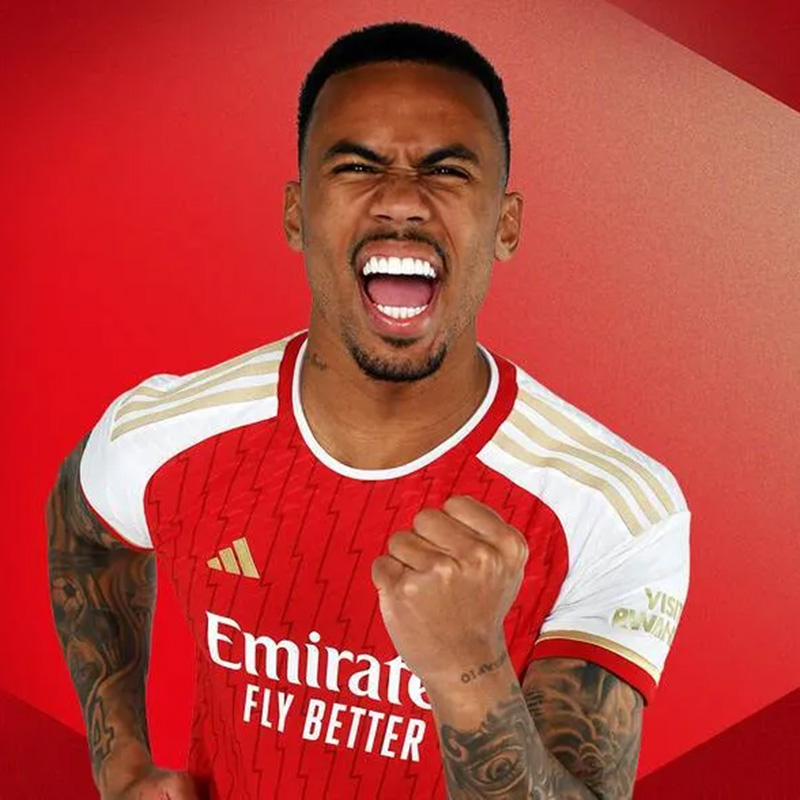
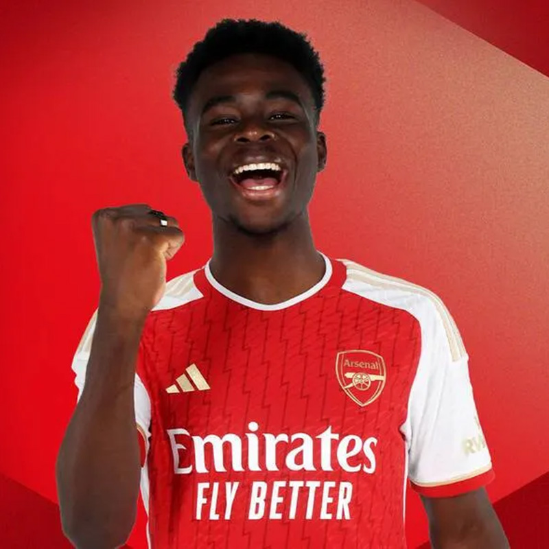

Spieler des Clubs
| Gabriel Jesus |
|  |
|
Geboren: 3. April 1997 (Alter 26) Position: Stürmer Im Verein seit: 04.07.2022 Spiele: 11 Rote Karten: 0 Gelb-Rote Karten: 0 Gelbe-Karten: 3 Vorlagen: 1 Tore: 5 |
| Martin Ødegaard |
|
Geboren: 17. Dezember 1998 (Alter 25) Position: Mittelfeld Im Verein seit: 20.08.2021 Spiele: 13 Rote Karten: 0 Gelb-Rote Karten: 0 Gelbe-Karten: 1 Vorlagen: 3 Tore: 4 |
| Bukayo Saka |
|  |
|
Geboren: 5. September 2001 (Alter 22) Position: Stürmer Im Verein seit: 01.07.2019 Spiele: 15 Rote Karten: 0 Gelb-Rote Karten: 0 Gelbe-Karten: 1 Vorlagen: 5 Tore: 7 |